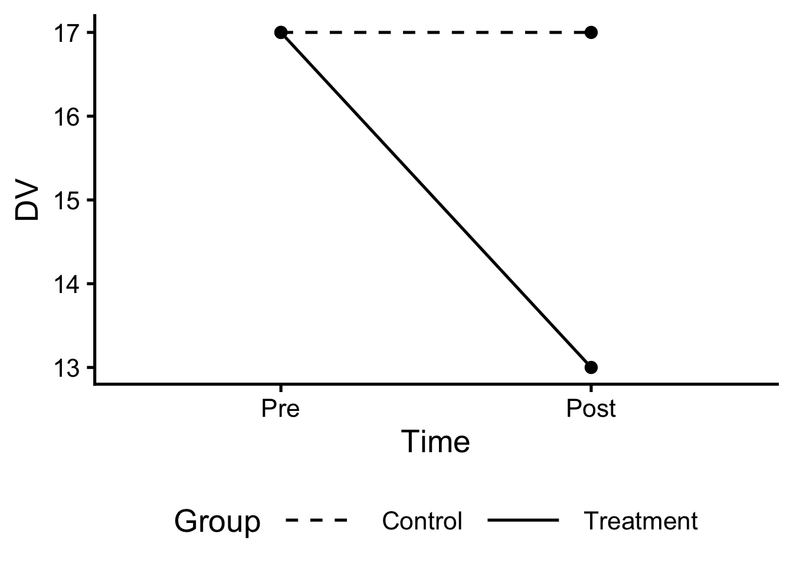

| Pre | Post | Mean | |
|---|---|---|---|
| Treatment | 17 | 13 | 15 |
Ch.11: Introduction to Factorial ANOVA
11 Introduction to Factorial ANOVA
Just like the fractals we see in nature, we can add multiple branchings to every experimental group, thus exploring combinations of factors and their contribution to the meaningful patterns we see in the data.
In this chapter we will tackle two-way Analysis of Variance (ANOVA) and explore conceptually how factorial analysis works. To understand when you need two-way ANOVA and how to set up the analyses, you need to understand the matching research design terminology. We will also need to define and interpret main effects and interaction effects, both of which can be analyzed in a factorial research design. Later we will approach the detection and interpretation of interaction effects, specifically, which will really help you see the extraordinary complexity of information factorial analyses can offer.
Factorial analyses such as a two-way ANOVA are required when we analyze data from a more complex study design than we have seen up until now. Specifically, when a study (or quasi-experiment) includes two or more independent variables (or grouping variables), we need factorial analysis. Factors are the grouping variables (either IV or naturally occurring groups), and “way” refers to the number of factors in the study. For example, a two-way ANOVA is used when there are two factors, while a three-way ANOVA is used when there are three factors, and so on.
NoteANOVA Terms and Notations
Factor: A grouping variable used to account for variance among scores. In an experiment, a factor is an independent variable (IV) that the researcher manipulates; a factor can also be an observed grouping variable (e.g., gender), in which case causal claims are limited.
Levels: Groups/conditions within a factor.
Way: The number of factors in the ANOVA.
- One-way ANOVA includes one factor;
- Two-way ANOVA includes two factors;
- Three-way ANOVA includes three factors;
- …
Factorial notation (m x n x …): Each number is the number of levels in one factor, and “x” (read as “by”) indicates that the factors are fully crossed with all combinations of levels. The count of numbers is the number of factors, and their product is the number of combinations (called cells). It’s commonly written as follows:
m (Factor1: Level1 /Level 2/ … Level m) x n (Factor2: Level 1/ Level 2/ … Level n) ANOVA
- 2x2 ANOVA: Two factors (a two-way ANOVA), with 2 levels in each factor; 4 cells.
Click to expand examples
- 2 (Time: Pre vs. Post) x 2 (Group: Control vs. Treatment) ANOVA
- 2x3 ANOVA: Two factors (a two-way ANOVA), with 2 levels in the first and 3 levels in the second; 6 cells.
- 2x2x2 ANOVA: Three factors (a three-way ANOVA), with 2 levels in each; 8 cells.
- 2x2 ANOVA: Two factors (a two-way ANOVA), with 2 levels in each factor; 4 cells.
Between-subjects Factorial ANOVA: Each participant is in only one level of every factor.
Click to expand examples
- 2 (Group: Control vs. Treatment) x 3 (Gender: Woman vs. Man vs. Non-Binary)
Repeated-measures Factorial ANOVA: Each participant is measured at every level of every factor.
Click to expand examples
- 2 (Time: Pre vs. Post) x 2 (Hand: Dominant vs. Non-dominant hand)
Mixed ANOVA: At least one factor is between-subjects and at least one is repeated within subjects.
Click to expand examples
- Treatment group is between-subjects; Time is within-subject.
11.1 Clinical Scenario: Antidepressant
Let’s consider a simple example of a two-way ANOVA. Imagine we want to study the effect of an antidepressant drug on depression. Depression is measured with the PHQ-9 scale, and the score ranges from 0 to 27.
11.2 Scenario 1: Comparing DV across Time (pre- vs. post-treatment)
The first factor we can consider is time (pre- vs. post-treatment). Table 1 shows hypothetical means for pre and post treatment.
However, we’ve discussed issues with One-Group Pretest-Posttest Design. Just measuring depression pre vs. post treatment is not enough to understand the effect of the drug. We can’t manipulate the order of the treatment (pre is always before post), and we cannot randomly assign participants to the counterbalanced order of “pre then post” or “post then pre,” because, what does “post then pre” even mean? This comes with many confounds, especially the threats associated with time (e.g., history, maturation, etc.).
What we would need is a good comparison group to compare the changes (i.e., differences) in depression scores from pre to post treatment. This is where the second factor comes in: group (treatment vs. control).
11.3 Scenario 2: Comparing DV across Time (pre- vs. post-treatment) and Group (treatment vs. control)
Again, we need a good comparison group for the change. What we are looking for is whether the change in depression scores from pre to post depends on whether they are receiving treatment (treatment vs. control). In other words, is the symptom improvement bigger for the treatment group than for the control group? We call this an interaction effect. The effect of one factor depends on the level of the other factor. If the improvement is bigger for the treatment group, maturation or history alone cannot explain the improvement.
Additionally, we can check whether there is a pre-existing differences in the two groups, and even if any difference does exist (e.g., it just so happens that our control group has lower depression score on average), we can look for a larger differences after the treatment.
If we find a significant interaction effect, we can conclude that the antidepressant drug is effective in reducing depression scores.
Let’s examine this hypothetical means for all four combinations of levels (cells) in Table 2, and the marginal means of each factor.
| Pre | Post | Mean | |
|---|---|---|---|
| Control | 17 | 17 | 17 |
| Treatment | 17 | 13 | 15 |
| Mean | 17 | 15 | 16 |
11.3.1 Main Effects
11.3.1.1 Main Effect of Factor 1 (Time)
You might already notice that the marginal means of pre and post (Table 2 column means in the bottom row; Figure 1 (a)) look different. This is called the main effect of time, which is about the reduction in the depression scores between the two time points regardless of the other factor, treatment. In other words, we are collapsing (i.e., averaging) across control and treatment conditions.
11.3.1.2 Main Effects of Factor 2 (Group)
Similarly, we can consider the marginal means of treatment and control (Table 2 row means in the right-most column; Figure 1 (b)), which shows the main effect of treatment. Again, we are averaging across pre and post, because we are interested in the overall difference between individuals who were assigned to the two groups, regardless of the status of treatment (pre vs. post).
This is an untitled chart with no subtitle or caption.
It has x-axis '' with labels Pre and Post.
It has y-axis '' with labels 0, 5, 10 and 15.
The chart is a bar chart with 2 vertical bars.
Bar 1 is centered at 1, and length is from 0 to 17.
Bar 2 is centered at 2, and length is from 0 to 15.This is an untitled chart with no subtitle or caption.
It has x-axis '' with labels Control and Treatment.
It has y-axis '' with labels 0, 5, 10 and 15.
The chart is a bar chart with 2 vertical bars.
Bar 1 is centered at 1, and length is from 0 to 17.
Bar 2 is centered at 2, and length is from 0 to 15.11.3.2 Interaction Effect
The key advantage of Factorial ANOVA, however, lies in the interaction. Now we are not just comparing two means. We have four cell means for all combinations of pre/post and control/treatment! With interaction, we are looking for the difference in differences. In this scenario, we are looking for the difference in changes: is the change from pre to post bigger for the treatment group, compared to the control group?
We can represent this with an interaction plot Figure 2. Notice that the slopes (changes from pre to post) are different between the groups (represented by line), and the slope for the treatment group is steeper than the control group. If this interaction is significant, meaning that the variability explained by these two factors are significantly larger than the variability unexplained, and if the treatment group had significantly larger improvement than the control group, this suggests that the treatment is effective in reducing depression symptoms, above and beyond what the natural prognosis would predict.
11.3.3 Interpreting main effects when there is an interaction
Main effects can be misleading when there is an interaction. In our example, the main effect of time (the overall decrease from pre to post) is not that meaningful, because it is mostly mostly driven by the treatment group, which dropped 6 points, while the control group dropped only 2. Likewise, the main effect of group (17 vs. 15) arises entirely after treatment, because the groups did not differ at pre. Describing the interaction (the pattern across the four cells) is therefore more informative than describing each marginal mean.
This is an untitled chart with no subtitle or caption.
It has x-axis '' with labels Pre and Post.
It has y-axis '' with labels 13, 14, 15, 16 and 17.
It has 2 layers.
Layer 1 is a set of 2 lines.
Line 1 connects 2 points, at (Pre, 17) and (Post, 17).
This line has line type dashed which maps to = Control.
Line 2 connects 2 points, at (Pre, 17) and (Post, 13).
This line has line type solid which maps to = Treatment.
Layer 2 is a set of 4 big solid circle points of which about 75% can be seen.
The points are at:
(Pre, 17),
(Pre, 17),
(Post, 17) and
(Post, 13)
Key Takeaways
- Factorial ANOVA is used when a study has two or more factors (grouping variables, either manipulated IVs or naturally occurring groups). “Way” is the number of factors, and the factorial notation (e.g., 2 x 3) gives the number of levels in each factor. The product of those numbers is the number of cells.
- A two-way ANOVA tests three effects:
- The main effect of each factor compares marginal means, averaging across the levels of the other factor.
- The interaction effect asks whether the effect of one factor depends on the level of the other factor.
- The interaction is a difference in differences. In the antidepressant example, it asks whether the pre-to-post change is bigger for the treatment group than for the control group. Graphically, it shows up as non-parallel lines in an interaction plot.
- Main effects can be misleading when there is an interaction. In the example, the main effect of time is driven by the treatment group, so describing the interaction (the pattern across cells) is more informative than describing each marginal mean.